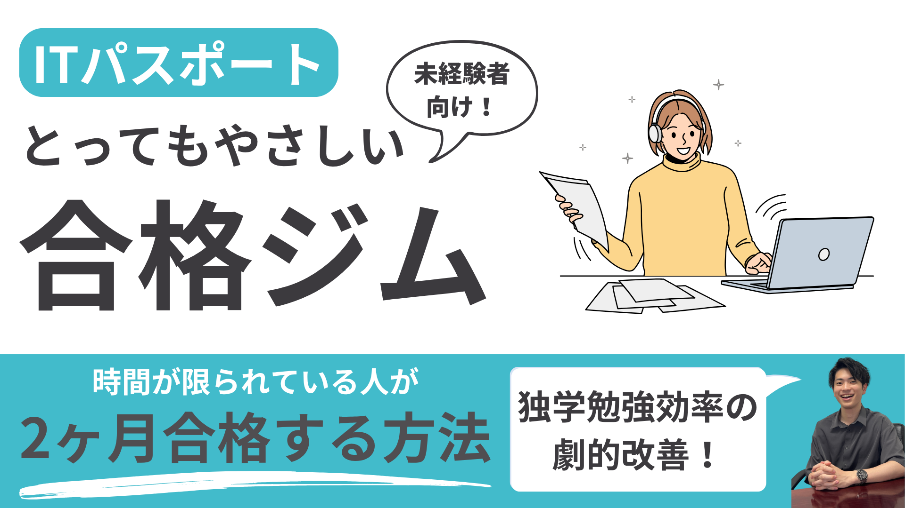
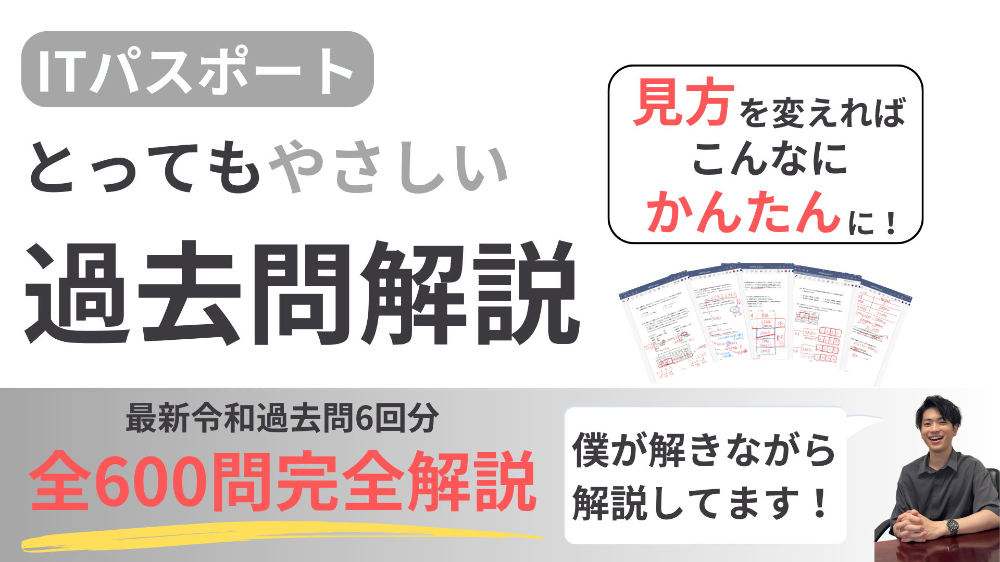
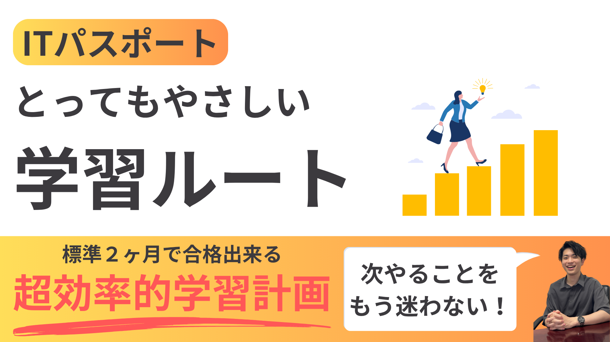
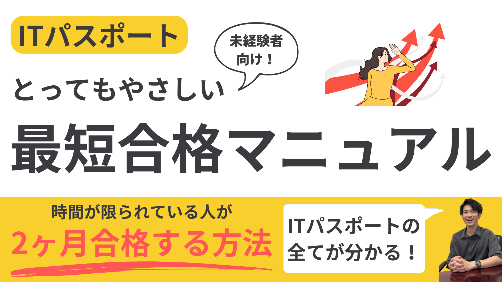
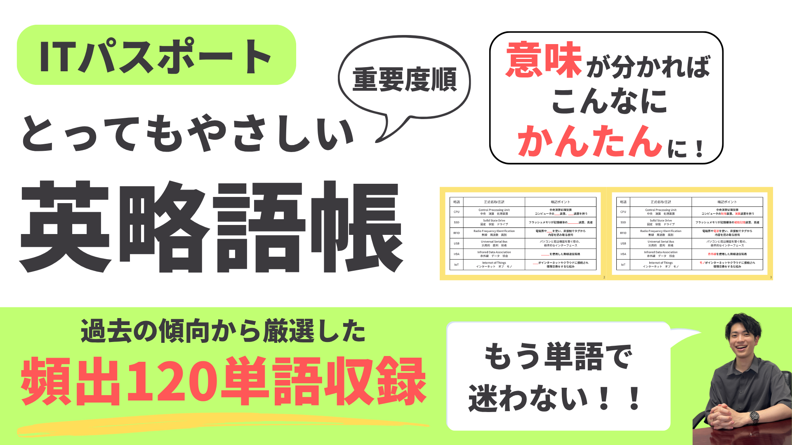
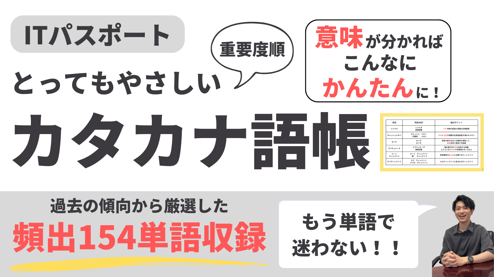
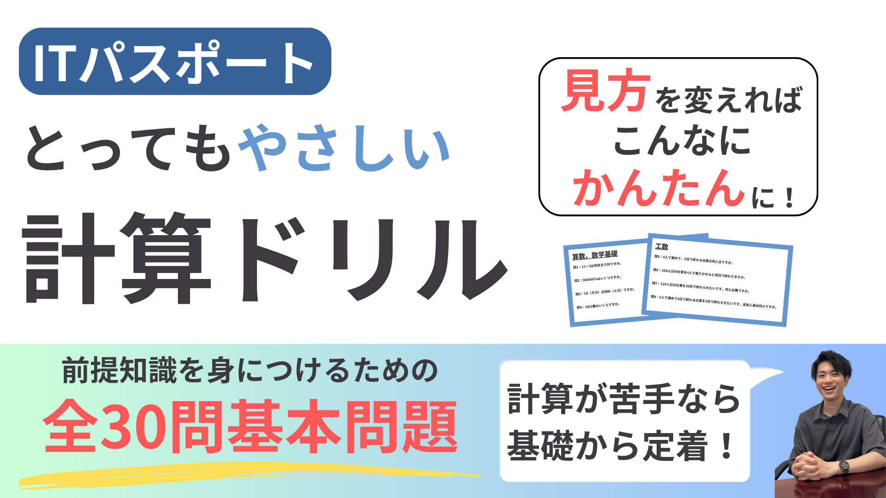
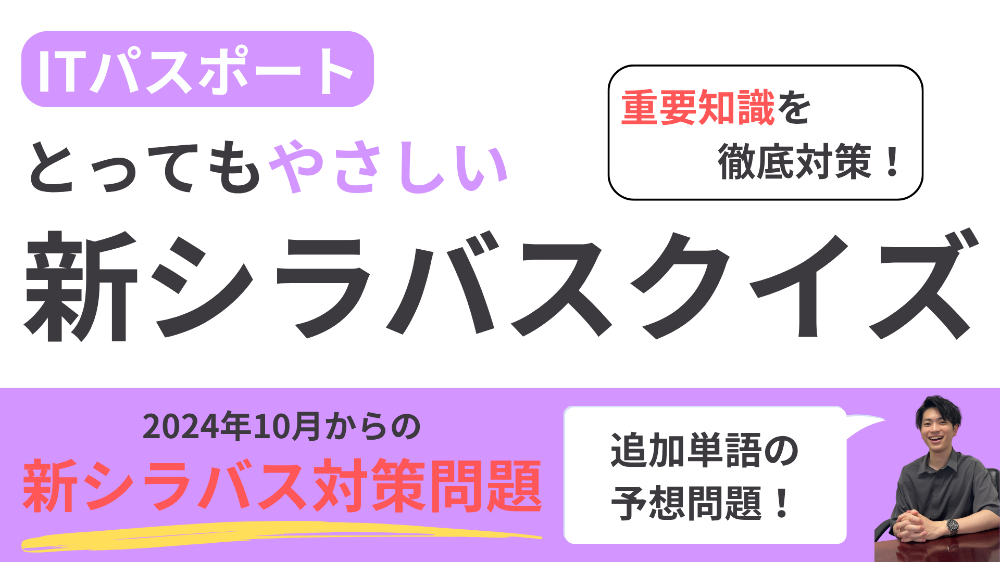

800本以上
過去問の解説動画
令和元年〜令和8年の過去問を、1問ずつ動画で解説しています。

IT未経験・文系の社会人のための
解説動画800本以上・オリジナルテキスト5冊・公式LINEで質問し放題。
合格に必要なものは、ぜんぶジムにそろっています。
10/31（土）までのご入会限定
初月 1,900円（税込）
2ヶ月目以降 月額2,900円／いつでも解約OK
※11/1以降のご入会は初月2,400円です
スマホだけで、今日から始められます
大丈夫です。
どれも、IT未経験の方が
ほぼ全員通る道です。
つまずく理由は「才能」ではなく、やり方と順番にあります。
ITパスポートは「広く浅く」出る試験。学校のテストのように1つずつ完璧に覚えようとすると、時間がいくらあっても足りません。合格ジムでは、受かるために必要なところを、必要な深さでやっていきます。
体を鍛えるジムと同じように、合格に必要な道具とメニューがそろった、使い放題の学習サービスです。
ジムのマシン
動画・テキストなど教材
トレーニングメニュー
ご希望に応じて作る学習計画
トレーナー
わからない所を聞ける質問対応
進めるのは、あなた
忙しさに合わせて計画的に進める
一人きりで参考書と向き合うのではなく、
「次に何をやればいいか」が決まっている状態で進められます。
800本以上
令和元年〜令和8年の過去問を、1問ずつ動画で解説しています。
4分野
ネットワーク・データベース・表計算ソフト・損益分岐点。つまずく人が多い4分野を、まとめて解説します。
5冊
最短合格マニュアル
学習ルート
英略語帳（頻出120語）
カタカナ語帳（頻出154語）
計算ドリル（基本30問）
2セット
2024年10月からの新シラバスで追加された内容の対策クイズです（①・②の2セット）。
回数無制限
わからないところは、公式LINEのチャットでいつでも質問できます。48時間以内に回答します（多くの場合は24時間以内）。
あなた専用
「計画を作ってほしい」と公式LINEで伝えるだけ。受験日や忙しさをうかがって、あなた専用の学習計画を作成します。







← 横にスクロールできます →
※教材は会員専用ページ（Googleドライブ）でご覧いただけます。ダウンロードはできません。解約と同時に閲覧期間が終了します。
600点 / 1000点
以上で合格
分野ごとの足切り（各300点以上）もありますが、4択の試験なので、普通に勉強していれば実質気にしなくて大丈夫です。
「過去問で7割とれたから大丈夫」と思って受けて、悔しい結果になってしまう方は少なくありません。本番では初めて見る問題も出るため、過去問では余裕をもった点数をとっておくことが大切です。
「どこまでやればいいか」がはっきりしているから、迷わず進めます。
「過去問をたくさん解かなきゃいけない」のは、きっともうわかっていますよね。
むずかしいのは、量そのものより、途中で手が止まってしまうことです。
よくある「止まり方」
だから合格ジムでは
問題の理解も、単語の暗記もスピードが上がるから、
たくさんの範囲の過去問をくり返せる。それが、85%へのいちばんの近道です。
参考書を何周もするより、令和の過去問（令和元年〜最新）をくり返すほうが、ずっと近道です。
| 1日の勉強時間 | 合格までの目安 |
|---|---|
| 1時間 | 約3ヶ月 |
| 1.5〜2時間 | 約2ヶ月 |
| 3〜4時間 | 約1ヶ月 |
※IT知識ゼロから始めた場合の目安です。
「平日は1時間、休日は3時間」のように、
あなたの忙しさに合わせて、合格に必要な勉強時間を計画に落とし込みます（ご希望の方）。
10/31（土）までのご入会限定
初月 1,900円（税込）
2ヶ月目以降 月額2,900円（税込）
※11/1以降のご入会は、初月2,400円になります
10/31までに入会して、2ヶ月で合格した場合
1,900円 ＋ 2,900円 ＝ 合計 4,800円
3ヶ月なら 7,700円です。
※合格したら、その月で解約していただいてOKです。
てるやAstonix株式会社
【要記入：お名前（イニシャル可）・年代・職業など】
【要記入：コメント本文】
公式LINEでご連絡いただくか、ペライチの画面から解約できます。
いつでも解約でき、解約金はかかりません。解約と同時に教材の閲覧は終了します。
クレジットカードのみとなります。
はい。動画・テキスト・クイズはすべてスマホで見られます。過去問も、スマホで解けるWebサイトを使います。
1冊あると安心です。おすすめは『いちばんやさしいITパスポート』（最新2年分の版）です。
無料のWebサイト「ITパスポート過去問道場」がおすすめです。スマホで手軽に解けて、正答率も記録できます。
公式LINEのチャットで質問できます。回数の上限はありません。48時間以内に回答します（多くの場合は24時間以内）。
学習計画を作ってほしいときも、同じく公式LINEでお伝えください。
2ヶ月の個別サポート「ITパスポートとってもやさしい合格プロジェクト」に、いつでも切り替えられます。お気軽にご相談ください。
合格に必要なものは、
もうそろっています。
あとは、計画どおりに進めるだけ。
10/31（土）までのご入会限定
初月 1,900円
2ヶ月目以降 月額2,900円・いつでも解約OK
途中で伴走サポートが必要になったら、
いつでも「合格プロジェクト」に切り替えられます。